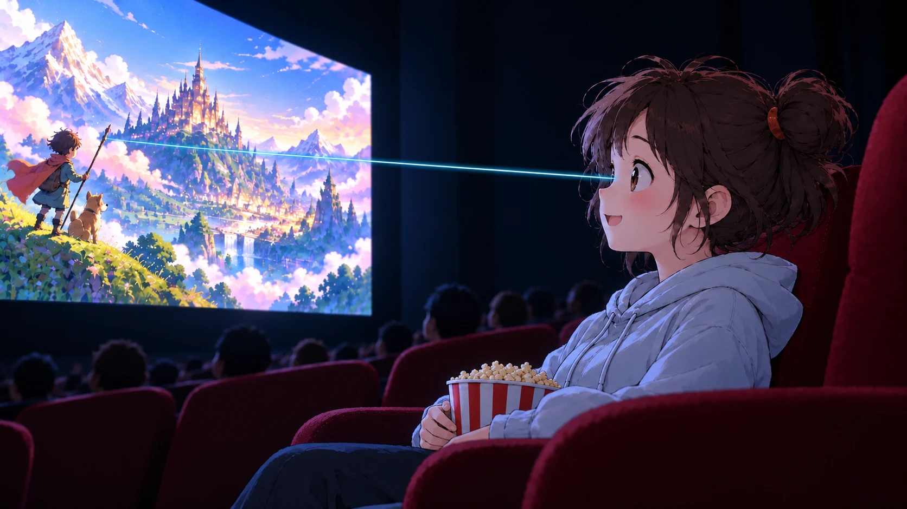

沿著探索路線，一步步認識光
從眼睛看到的現象開始
光要進入眼睛為什麼我們看得見東西？
我們看見光源，也看見被照亮的物體；兩種情況都需要光進入眼睛，但光走的路徑不同。
我看電影時，銀幕的光直接進入眼睛；可是書頁自己不發光，阿公怎麼也看得見？
先沿著這兩個例子找一找：光從哪裡出發，又怎麼進入眼睛？
小葵看見電影螢幕發出的光
夜裡，電影螢幕是光源；螢幕光沿直線進入小葵的眼睛。

阿公看見被燈光照亮的書
夜裡，檯燈照亮書頁；書頁反射的光進入阿公的眼睛。

箭頭表示光前進的方向；光照到書頁後向不同方向反射，部分反射光進入眼睛。
先記住：看見物體，需要有光進入眼睛；光可能直接來自光源，也可能先照到物體再反射進眼睛。
分清楚光從哪裡來
自己發光或反射光今晚，哪些光讓小葵看得見？
切換照向月球的陽光和書桌檯燈，觀察月亮、書頁與光路如何改變。
那月亮和書頁是不是也都自己發光？把燈關掉後，又會剩下什麼？
先猜一猜，再分別關掉照向月球的陽光和書桌檯燈，觀察畫面。

觀察重點：月亮和書本本身都不發光；月亮反射陽光、書頁反射檯燈的光，這些光進入眼睛後，我們才能看見它們。
觀察光的路徑
光沿直線前進光路會彎嗎？
觀察三個小孔是否排成一直線，以及屏幕亮點如何變化。
現在中間板偏高，屏幕沒有亮點；光會不會自己轉彎，繞過中間板呢？
試著移動中間板，再讓它稍微偏離，看看三個小孔的燈泡和屏幕亮點有什麼變化。
小孔前後距離改變時，只要仍排成直線，光就能通過；小孔略微偏離時，屏幕亮點會變暗；偏移過大時，光被板片擋住，亮點消失。
從現象推想：小孔要排成一直線，光才能通過。光在均勻介質中沿直線傳播。
把直線光路連到影子
不透明物體擋住光影子怎麼形成？
剛才孔板擋住了光；如果換成一顆不透明球，屏幕上是不是也會留下暗的地方？
沿著光源到屏幕的路徑看一看，球擋住光之後，屏幕哪裡收不到光？
光源發出的光沿直線前進。當不透明物體擋在光源和屏幕之間，沒有光到達的區域就形成影子。
球體停在光路旁，屏幕均勻受光。
直接拖曳球體沿導軌移動，屏幕影子會隨位置改變；拖曳空白處可旋轉場景，滾輪或雙指可縮放。
形成原因：影子不是物體發出的，而是光被不透明物體遮住後留下的暗區。
觀察物體位置的影響
物體靠近光源，影子變大影子的大小如何改變？
試著移動光源和屏幕之間的遮擋物。觀察它靠近光源或靠近屏幕時，屏幕上的影子有什麼變化。
物體沒有變，為什麼把它移動後，影子也會變大或變小？
把遮擋物移近光源，再移近屏幕，比較兩次影子的輪廓。
球體靠近光源，屏幕上的影子較大。
拖曳球體沿導軌前後移動，觀察影子大小改變；拖曳空白處可旋轉場景，滾輪或雙指可縮放。
觀察重點：影子的大小會隨光源、遮擋物和屏幕的相對位置改變。示意圖用點光源簡化說明，實際影子邊緣可能較模糊。
感受光速的尺度
光不是瞬間到達光傳得有多快？
光沿直線傳播，但也需要時間走過距離。以地球和月球的平均距離作例子，感受光速的尺度。
從地球到月球這麼遠，光要走多久？我平常怎麼感覺不到它在路上呢？
拖動時間，跟著光點從地球走向月球；看看它是否一開始就到了。
拖動時間，觀察光走過的距離。
示意圖的地球、月球與路徑長度不按比例。
光速：真空中的光每秒約走 30 萬公里。這裡用距離感受光速，不需要代公式計算。
把觀察連起來
整合理解整理：用光路解釋看見與影子
一本書本身不發光，卻能被看見；手電筒前方放一個不透明物體，屏幕上會出現影子。哪個說法能解釋這兩個現象？
我們看過書頁反射光，也看過物體擋住光；我想把這兩種現象用光路一起說清楚。
選一個說法，看看它能不能同時解釋看見書本和形成影子。